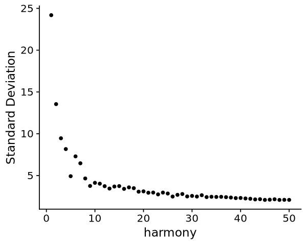

## set up environment
suppressMessages({
source("/camp/home/hungm/working/Matthew/library/R/functions/Seurat/processing.R")
source("/camp/home/hungm/working/Matthew/library/R/functions/Seurat/plotting.R")
source("/nemo/lab/caladod/working/Matthew/library/R/functions/Seurat/genedict.R")
setwd("/nemo/lab/caladod/working/Matthew/project/matthew/MH_GSE155224")})
## import seurat objects
obj <- qread( "seurat/20240826_GSE155224_qc.qs")9 SCTransform
obj <- qread( "seurat/20240826_GSE155224_qc.qs")9.1 SCTransform, PCA, Integration
obj[["RNA"]] <- split(obj[["RNA"]], f = obj$samples)
objAn object of class Seurat
17895 features across 9803 samples within 5 assays
Active assay: RNA (17437 features, 0 variable features)
4 layers present: counts.filtered_matrix_1, counts.filtered_matrix_2, data.filtered_matrix_1, data.filtered_matrix_2
4 other assays present: HTO, ADT, BCR, TCR
3 dimensional reductions calculated: pca, harmony, umapobj <- SCTransform(obj, vst.flavor = "v2", variable.features.n = 3000, assay = "RNA", return.only.var.genes = F, verbose = F, vars.to.regress = c("S.Score", "G2M.Score"))
obj <- RunPCA(obj, reduction.name = "pca", verbose = F)
obj <- RunHarmony(obj, reduction.use = "pca", group.by.vars = "samples", verbose = F)Warning message:
“Adding more features than present in current data”
Warning message:
“Adding more features than present in current data”
Transposing data matrix
options(repr.plot.width=5, repr.plot.height=4)
ElbowPlot(obj, ndims = 50, reduction = "harmony")options(repr.plot.width=10, repr.plot.height=8)
p1 <- scUMAP(obj, reduction = "harmony", group.by = "MULTI_ID", split.by = "samples", shuffle = T)
p2 <- scUMAP(obj, reduction = "harmony", group.by = "Phase", split.by = "samples", shuffle = T)
p1/p2obj <- RunUMAP(obj, dims = 1:10, reduction = "harmony", reduction.name = "umap", assay = "SCT", verbose = FALSE)Found more than one class "dist" in cache; using the first, from namespace 'BiocGenerics'
Also defined by ‘spam’
Found more than one class "dist" in cache; using the first, from namespace 'BiocGenerics'
Also defined by ‘spam’
options(repr.plot.width=10, repr.plot.height=4)
p1 <- scUMAP(obj, reduction = "umap", group.by = "samples", shuffle = T)
p2 <- scUMAP(obj, reduction = "umap", group.by = "Phase")
p1 + p2options(repr.plot.width=10, repr.plot.height=4)
p1 <- scUMAP(obj, reduction = "umap", group.by = "MULTI_ID", split.by = "samples", shuffle = T)
p19.2 Regress Cell Cycle Scores
obj <- SCTransform(obj, vst.flavor = "v2", variable.features.n = 3000, assay = "RNA", return.only.var.genes = F, verbose = F, vars.to.regress = c("S.Score", "G2M.Score"))
obj <- RunPCA(obj, reduction.name = "pca", verbose = F)Warning message:
“Adding more features than present in current data”
Warning message:
“Adding more features than present in current data”9.3 Adjust Harmony Integration
obj$harmony_correct <- paste0(obj$samples, "_", obj$MULTI_ID)
obj <- RunHarmony(obj, reduction.use = "pca", group.by.vars = "harmony_correct", verbose = F)Transposing data matrix
options(repr.plot.width=5, repr.plot.height=4)
ElbowPlot(obj, ndims = 50, reduction = "harmony")
options(repr.plot.width=10, repr.plot.height=4)
p1 <- scUMAP(obj, reduction = "harmony", group.by = "MULTI_ID", split.by = "samples", shuffle = T)
p1obj <- RunUMAP(obj, dims = 1:10, reduction = "harmony", reduction.name = "umap", assay = "SCT", verbose = FALSE)Found more than one class "dist" in cache; using the first, from namespace 'BiocGenerics'
Also defined by ‘spam’
Found more than one class "dist" in cache; using the first, from namespace 'BiocGenerics'
Also defined by ‘spam’
options(repr.plot.width=10, repr.plot.height=4)
p1 <- scUMAP(obj, reduction = "umap", group.by = "samples", shuffle = T)
p2 <- scUMAP(obj, reduction = "umap", group.by = "Phase")
p1 + p2options(repr.plot.width=8, repr.plot.height=4)
obj$MULTI_ID <- gsub(".*Hash", "Hash", obj$MULTI_ID)
obj$MULTI_ID <- gsub("-total.*", "", obj$MULTI_ID)
p1 <- scUMAP(obj, reduction = "umap", group.by = "MULTI_ID", split.by = "samples", shuffle = T)
p1options(repr.plot.width=15, repr.plot.height=4)
scDensityUMAP(obj, split.by = "MULTI_ID", reduction = "umap", adjust = 1.2)9.4 Find Louvain Clusters
obj <- FindNeighbors(obj, reduction = "harmony", dims = 1:10, verbose = F)
obj <- FindClusters(obj, resolution = seq(0.1, 1, 0.1), algorithm = 1, verbose = F)
clustree <- clustree(obj@meta.data, prefix = paste0("SCT_snn_res."))options(repr.plot.width=15, repr.plot.height=6)
print(clustree +
theme(legend.box = "horizontal"))options(repr.plot.width=5, repr.plot.height=4)
scUMAP(obj, reduction = "umap", group.by = "SCT_snn_res.0.2", count = T, pt.size = 1.2, cols = kelly, shuffle = F)Scale for colour is already present.
Adding another scale for colour, which will replace the existing scale.
Scale for colour is already present.
Adding another scale for colour, which will replace the existing scale.for(a in names(obj@assays)){
if(a %in% c("RNA", "BCR", "TCR", "CC")){
obj[[a]] <- JoinLayers(obj[[a]])}}for(a in names(obj@assays)){
if(a %in% c("BCR", "TCR", "CC")){
obj <- return_genes(obj, from_assay = a, to_assay = "RNA")}}Warning message:
“Different cells and/or features from existing assay RNA”
Warning message:
“Different cells and/or features from existing assay RNA”options(repr.plot.width=4, repr.plot.height=3)
pearson <- calculate_cluster_similarity(obj, cluster = "SCT_snn_res.0.2", variable.features = T)
plot_similarity_heatmap(pearson)Warning message in brewer.pal(12, "RdBu"):
“n too large, allowed maximum for palette RdBu is 11
Returning the palette you asked for with that many colors
”
9.5 Session Info
qsave()sessionInfo()R version 4.3.2 (2023-10-31)
Platform: x86_64-conda-linux-gnu (64-bit)
Running under: Rocky Linux 8.7 (Green Obsidian)
Matrix products: default
BLAS/LAPACK: /nemo/lab/caladod/working/Matthew/.conda/envs/seurat5/lib/libopenblasp-r0.3.23.so; LAPACK version 3.11.0
locale:
[1] LC_CTYPE=en_GB.UTF-8 LC_NUMERIC=C
[3] LC_TIME=en_GB.UTF-8 LC_COLLATE=en_GB.UTF-8
[5] LC_MONETARY=en_GB.UTF-8 LC_MESSAGES=en_GB.UTF-8
[7] LC_PAPER=en_GB.UTF-8 LC_NAME=C
[9] LC_ADDRESS=C LC_TELEPHONE=C
[11] LC_MEASUREMENT=en_GB.UTF-8 LC_IDENTIFICATION=C
time zone: Europe/London
tzcode source: system (glibc)
attached base packages:
[1] stats4 grid stats graphics grDevices utils datasets
[8] methods base
other attached packages:
[1] scDblFinder_1.14.0 DoubletFinder_2.0.4
[3] BiocParallel_1.36.0 harmony_1.1.0
[5] Rcpp_1.0.11 qs_0.26.3
[7] viridis_0.6.4 viridisLite_0.4.2
[9] ggalluvial_0.12.5 ggnewscale_0.4.9
[11] ggrepel_0.9.4 UCell_2.4.0
[13] writexl_1.4.2 readxl_1.4.3
[15] wesanderson_0.3.6.9000 ComplexHeatmap_2.16.0
[17] cluster_2.1.4 lmtest_0.9-40
[19] zoo_1.8-12 binaryLogic_0.3.9
[21] jaccard_0.1.0 RColorBrewer_1.1-3
[23] celda_1.16.1 Matrix_1.6-1
[25] SingleCellExperiment_1.24.0 SummarizedExperiment_1.32.0
[27] Biobase_2.62.0 GenomicRanges_1.54.1
[29] GenomeInfoDb_1.38.0 IRanges_2.36.0
[31] S4Vectors_0.40.1 BiocGenerics_0.48.0
[33] MatrixGenerics_1.14.0 matrixStats_1.0.0
[35] ggpubr_0.6.0 rstatix_0.7.2
[37] gridExtra_2.3 scales_1.3.0
[39] clustree_0.5.0 ggraph_2.1.0
[41] cowplot_1.1.1 patchwork_1.2.0
[43] SeuratDisk_0.0.0.9021 tonsilref.SeuratData_2.0.0
[45] pbmcref.SeuratData_1.0.0 pbmc3k.SeuratData_3.1.4
[47] SeuratData_0.2.2.9001 Seurat_5.0.0
[49] SeuratObject_5.0.0 sp_2.1-1
[51] lubridate_1.9.3 forcats_1.0.0
[53] stringr_1.5.0 dplyr_1.1.4
[55] purrr_1.0.2 readr_2.1.4
[57] tidyr_1.3.0 tibble_3.2.1
[59] ggplot2_3.5.1 tidyverse_2.0.0
[61] biomaRt_2.58.0
loaded via a namespace (and not attached):
[1] igraph_1.5.1 ica_1.0-3
[3] plotly_4.10.3 scater_1.28.0
[5] zlibbioc_1.48.0 tidyselect_1.2.0
[7] bit_4.0.5 doParallel_1.0.17
[9] clue_0.3-64 lattice_0.21-8
[11] rjson_0.2.21 blob_1.2.4
[13] S4Arrays_1.2.0 parallel_4.3.2
[15] png_0.1-8 cli_3.6.1
[17] goftest_1.2-3 BiocIO_1.12.0
[19] glmGamPoi_1.14.0 bluster_1.10.0
[21] BiocNeighbors_1.18.0 uwot_0.1.16
[23] curl_5.1.0 mime_0.12
[25] evaluate_0.23 leiden_0.4.3
[27] ggh4x_0.2.5 stringi_1.7.12
[29] backports_1.4.1 assertive.numbers_0.0-2
[31] XML_3.99-0.14 httpuv_1.6.12
[33] AnnotationDbi_1.64.0 magrittr_2.0.3
[35] rappdirs_0.3.3 splines_4.3.2
[37] RApiSerialize_0.1.2 sctransform_0.4.1
[39] ggbeeswarm_0.7.2 DBI_1.1.3
[41] withr_2.5.2 xgboost_1.7.7.1
[43] assertive.base_0.0-9 tidygraph_1.2.3
[45] rtracklayer_1.62.0 htmlwidgets_1.6.2
[47] IRkernel_1.3.2 labeling_0.4.3
[49] SparseArray_1.2.0 cellranger_1.1.0
[51] reticulate_1.34.0 XVector_0.42.0
[53] RhpcBLASctl_0.23-42 timechange_0.2.0
[55] foreach_1.5.2 fansi_1.0.5
[57] data.table_1.14.8 RSpectra_0.16-1
[59] irlba_2.3.5.1 fastDummies_1.7.3
[61] gridGraphics_0.5-1 ellipsis_0.3.2
[63] lazyeval_0.2.2 yaml_2.3.7
[65] survival_3.5-7 scattermore_1.2
[67] crayon_1.5.2 RcppAnnoy_0.0.21
[69] IRdisplay_1.1 progressr_0.14.0
[71] tweenr_2.0.2 later_1.3.1
[73] ggridges_0.5.4 assertive.types_0.0-3
[75] codetools_0.2-19 base64enc_0.1-3
[77] GlobalOptions_0.1.2 KEGGREST_1.42.0
[79] Rtsne_0.16 shape_1.4.6
[81] limma_3.56.2 Rsamtools_2.18.0
[83] filelock_1.0.2 pkgconfig_2.0.3
[85] xml2_1.3.5 GenomicAlignments_1.38.0
[87] spatstat.sparse_3.0-3 multipanelfigure_2.1.2
[89] xtable_1.8-4 car_3.1-2
[91] plyr_1.8.9 httr_1.4.7
[93] tools_4.3.2 globals_0.16.2
[95] checkmate_2.2.0 beeswarm_0.4.0
[97] broom_1.0.5 nlme_3.1-163
[99] dbplyr_2.4.0 hdf5r_1.3.8
[101] digest_0.6.33 farver_2.1.1
[103] tzdb_0.4.0 reshape2_1.4.4
[105] WriteXLS_6.4.0 glue_1.6.2
[107] cachem_1.0.8 BiocFileCache_2.10.1
[109] polyclip_1.10-6 generics_0.1.3
[111] Biostrings_2.70.1 presto_1.0.0
[113] parallelly_1.36.0 statmod_1.5.0
[115] RcppHNSW_0.5.0 ScaledMatrix_1.8.1
[117] carData_3.0-5 pbapply_1.7-2
[119] assertive.properties_0.0-5 spam_2.10-0
[121] dqrng_0.3.1 utf8_1.2.4
[123] assertive.files_0.0-2 graphlayouts_1.0.0
[125] ggsignif_0.6.4 RcppEigen_0.3.3.9.3
[127] shiny_1.7.5.1 GenomeInfoDbData_1.2.11
[129] RCurl_1.98-1.12 memoise_2.0.1
[131] future_1.33.0 RANN_2.6.1
[133] stringfish_0.16.0 spatstat.data_3.0-3
[135] spatstat.utils_3.0-5 hms_1.1.3
[137] fitdistrplus_1.1-11 munsell_0.5.0
[139] colorspace_2.1-0 rlang_1.1.3
[141] DelayedMatrixStats_1.24.0 sparseMatrixStats_1.14.0
[143] dotCall64_1.1-0 ggforce_0.4.1
[145] circlize_0.4.15 scuttle_1.10.3
[147] iterators_1.0.14 abind_1.4-5
[149] MCMCprecision_0.4.0 repr_1.1.6
[151] bitops_1.0-7 promises_1.2.1
[153] RSQLite_2.3.2 qvalue_2.32.0
[155] DelayedArray_0.28.0 pbdZMQ_0.3-9
[157] compiler_4.3.2 prettyunits_1.2.0
[159] beachmat_2.18.0 listenv_0.9.0
[161] enrichR_3.2 edgeR_3.42.4
[163] BiocSingular_1.16.0 tensor_1.5
[165] MASS_7.3-60 progress_1.2.2
[167] uuid_1.1-1 spatstat.random_3.2-1
[169] R6_2.5.1 fastmap_1.1.1
[171] vipor_0.4.5 ROCR_1.0-11
[173] rsvd_1.0.5 gtable_0.3.4
[175] KernSmooth_2.23-22 miniUI_0.1.1.1
[177] deldir_1.0-9 htmltools_0.5.6.1
[179] RcppParallel_5.1.7 bit64_4.0.5
[181] spatstat.explore_3.2-5 lifecycle_1.0.3
[183] restfulr_0.0.15 vctrs_0.6.4
[185] isoband_0.2.7 spatstat.geom_3.2-7
[187] scran_1.28.2 future.apply_1.11.0
[189] pillar_1.9.0 magick_2.8.1
[191] metapod_1.8.0 locfit_1.5-9.8
[193] combinat_0.0-8 jsonlite_1.8.7
[195] GetoptLong_1.0.5